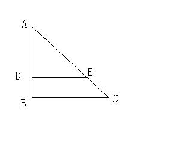
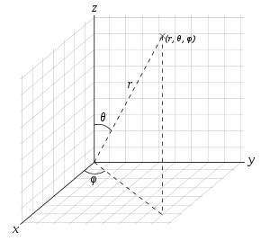
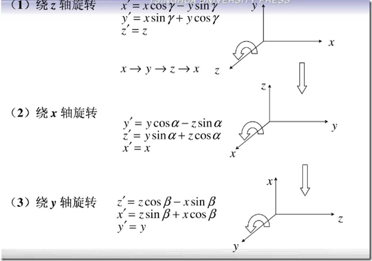
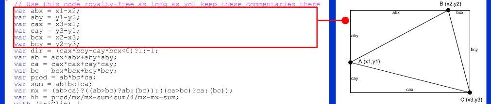

-
3D模型初识
--by horizon -
原理

-
z坐标投影到平面后对x, y 坐标的影响
 demo -
三维旋转矩阵
生成旋转矩阵的一种简单方式是把它作为三个基本旋转的序列复合。关于右手笛卡尔坐标系的 x-, y- 和 z-轴的旋转分别叫做 roll, pitch 和 yaw 旋转。因为这些旋转被表达为关于一个轴的旋转，它们的生成元很容易表达。
-
- 绕 x-轴的主动旋转定义为:
 这里的 θx 是 roll 角。
这里的 θx 是 roll 角。
- 绕 y-轴的主动旋转定义为:
 这里的 θy 是 pitch 角。
这里的 θy 是 pitch 角。
- 绕 z-轴的主动旋转定义为:
 这里的 θz 是 yaw 角。
这里的 θz 是 yaw 角。
-

绕Y轴旋转 -
关于单点透视的消失点（VanishPoint）和观察点（ViewPoint/Camera）
VanishPoint通常是被观察物体的相对坐标原点
ViewPoint 即观察者的视角点（camera）
VanishPoint demo ViewPoint demo -
关于三角形翻转正反面的判断
http://www.jurjans.lv/flash/shape.html

-
Thanks!